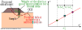

Get familiar with the advantages and limitations of the test.
After this lecture we will able to:
Describe the details of a DST test.
Describe the details of the ASTM D3080.
Describe the limitations of the DST.
Direct shear test (DST)
Initial configuration
Final configuration
Stages of the DST
Each DST has two stages: (1) consolidation and (2) shearing.
Must ensure EOP.
The consolidation stage also needed for calculating rate of loading.
Pore pressure is not measured and drainage is free.
Must shearvery slow so that \(\Delta u \approx 0\)
During a DST the normal and shear stresses, and the axial and lateraldisplacements are measured.
At least three tests needed.
Can get peak shear stresses.
Must plot results in \(\tau\) vs \(\sigma\) to get parameters.
Note: You can normalize the displacements using \(\delta x/D\) and \(\delta y/ H\). However, these are not distortions or strains.
How does the stress path look like during a DST❓
This implies principal stress rotation
DST steps
You wil learn detailed steps in the ASTM D3080 and during your laboratory practice. Below are steps to obtaining the FSSS:
Prepare the sample.
Place sample in direct shear box.
Weight and measure initial conditions.
Consolidate the sample at desired \(\sigma'_n\).
Determine rate of shearing.
Shear the sample.
Unmount and measure final conditions.
Repeat at least three times with different \(\sigma'_n\).
Post-process the data.
Sample preparation
Sample to determine the FSSS should be prepared following the steps below.
Soak soil for two days.
Sieve trough #40 opening.
Air-dry to ensure \(w \approx LL\).
Using a spatula, fill the box starting from the edges towards the interior to remove bubbles.
Complete the bottom part first, add the top and continue.
Consolidation stage
Before shearing the sample it must be consolidated to desired normal stress.
Use the LIR method to bring the sample to desired normal stress.
Start with a seating load of 5 kPa.
It is critical to ensure the sample reached EOP. Otherwise, remaining excess pore pressure will exist at the beginning of shearing.
Calculating the shear rate
Gibson and Henkel (1954) derived an equation combining consolidation and excess pore pressure generated during shearing to calculate the time to failure that produces \(\Delta u \approx 0\). For a direct shear test the equation is:
\( t_f= \cfrac{H_{dr}^2}{2 C_v (1-\bar{U}_f)} \)
\(H_{dr} \equiv\) half the sample thickness
\(\bar{U}_f \equiv\) Average degree of consolidation at failure
\(t_{50} \equiv\) Time to 50% degree of consolidation.
\(t_{90} \equiv\) Time to 90% degree of consolidation.
Further assumptions for DST leads to:
\( t_f= 50 t_{50} | 11.6 t_{90} \)
So how do we actually calculate the rate of shearing❓
To calculate a rate we also need a displacement to failure \(\delta x_f\), so that:
\( v_{s}= \delta x_f / t_f \)
According to the ASTM D3080: Select \(\delta x_f = (10\% - 20\%) D\) (\(D \equiv\) sample diameter). But not less than \(\delta x_f= 0.2\) in.
Note: The rate of shear can only be calculated after the consolidation stage.
Selecting the normal stresses
The selected normal stresses for the DST should be representative of the field conditions under operation.

Example 3.1
The figure shows the results of a sacrificial slope stability analysis for a future embankment. The embankment will have \(\gamma_t= 19\) kN/m3 and the clay below has \(\gamma_{sat}=15\) kN/m3. It is also known that after consolidation \(t_{50}=25\) min. If the sample diameter is 2.5 in, determine: (a) three normal loads to be used in the DST, (b) the rate of shearing, and (c) an estimated time for completing the three tests.